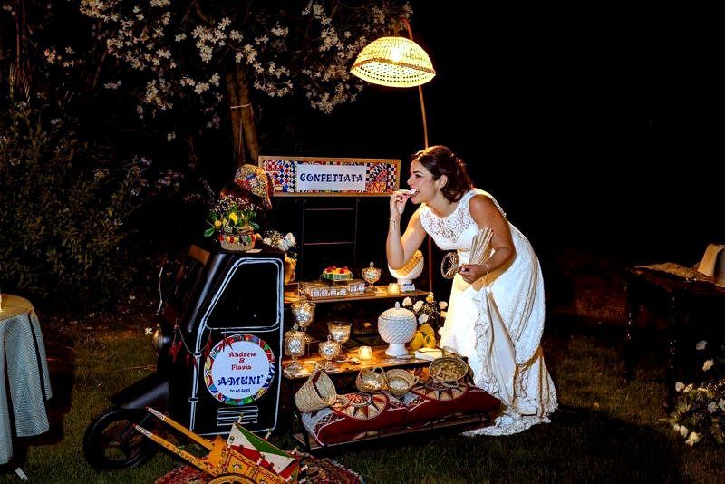
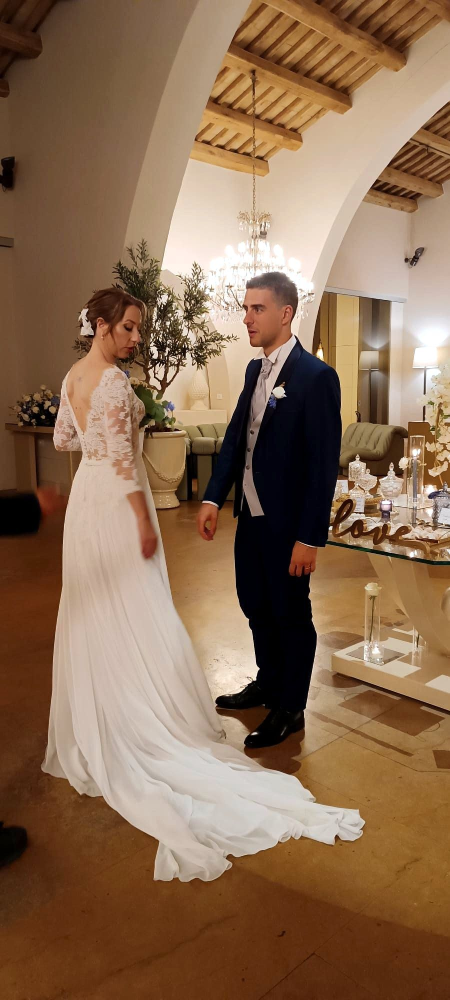
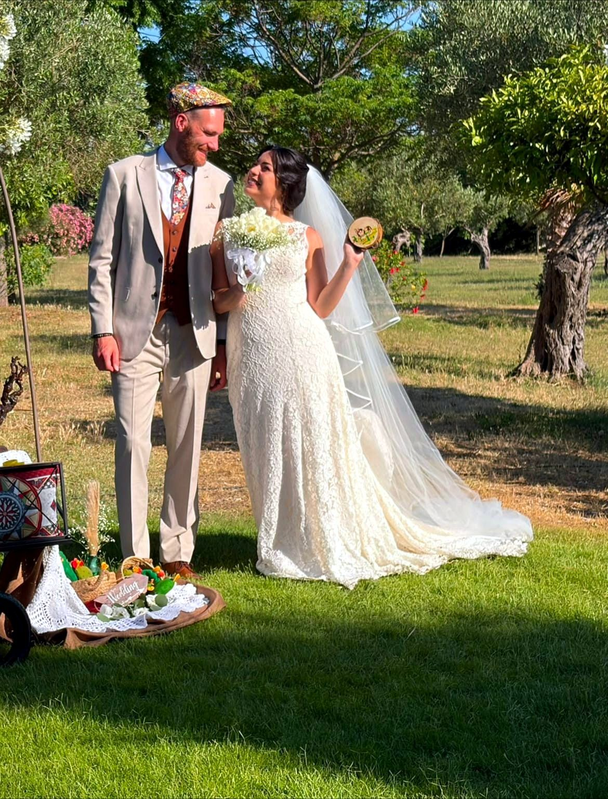
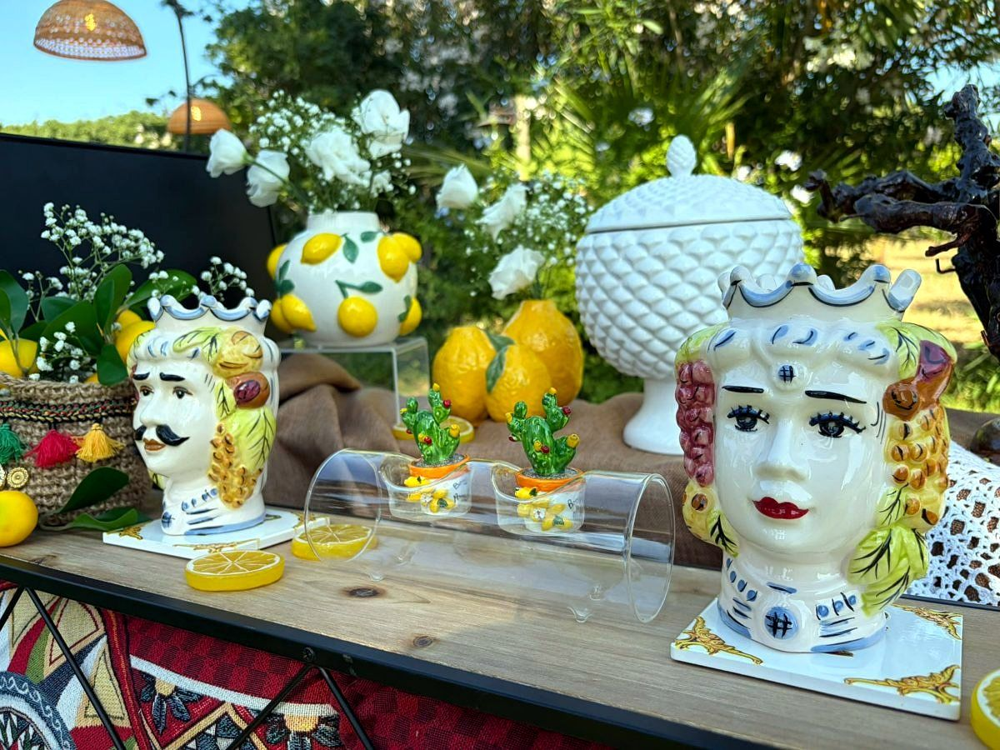
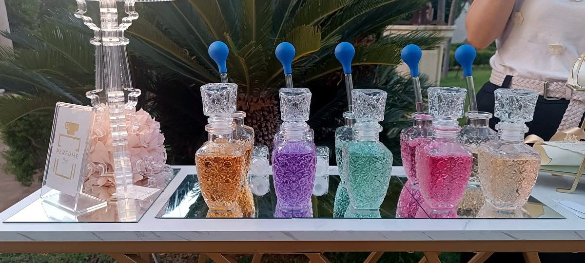

Matrimoni
Dalla cerimonia alla festa: stile, tempi e dettagli pensati per raccontare la vostra coppia.
Wedding planner, event planner e organizzatrice di feste · Trapani, Marsala, Paceco
Matrimoni, diciottesimi, lauree e feste da vivere fino in fondo. Progettiamo insieme ogni dettaglio, con il ritmo e lo stile che vi somigliano.
Raccontami la tua ideaUn’organizzazione attenta, costruita attorno alle persone e all’atmosfera che volete creare.
Dalla cerimonia alla festa: stile, tempi e dettagli pensati per raccontare la vostra coppia.
Diciottesimi, lauree, compleanni, anniversari, battesimi, comunioni, fidanzamenti e baby shower.
Inaugurazioni, cene, presentazioni, ricorrenze e momenti da condividere con il vostro team.
Creatività, cura e presenza, dall’inizio fino al giorno dell’evento.

Mi occupo di scenografie e allestimenti che rispecchiano chi siete. Insieme trasformiamo desideri e idee in un progetto concreto, armonioso e adatto alle persone che volete accanto.
Parlo anche spagnolo e organizzo eventi su misura, curando dettagli, fornitori e tempi. Che si tratti di una cerimonia intima o di una festa piena di energia, vi accompagno passo dopo passo e sono presente nel giorno concordato.
ConosciamociIry è madrelingua spagnola e può accompagnare eventi con ospiti italiani e ispanofoni. Lingue, tradizioni, musica e piccoli dettagli si incontrano in una festa pensata intorno a voi, senza formule preconfezionate.
Diamo forma al progetto e coordiniamo i dettagli perché voi possiate godervi il vostro evento.
Definiamo priorità, budget e tappe, poi trasformiamo le idee in un piano concreto e condiviso.
Contatti, scadenze e incastri restano sotto controllo con una regia che tiene insieme i protagonisti.
Palette, tavoli, tableau, segnaletica e dettagli scenografici prendono forma in un progetto coerente.
Scaletta, arrivi e passaggi chiave seguono il ritmo concordato, così potete stare con i vostri ospiti.
Disposizione dei tavoli, punti di accoglienza e flussi sono pensati per far sentire tutti a proprio agio.
Parliamo del tipo di evento, delle persone e del budget: servizi e preventivo si definiscono insieme.
Tipo di evento, data, invitati, priorità e budget: partiamo da quello che sapete già.
Mettiamo a fuoco stile, servizi e prossimi passi in base alla location e alle vostre scelte.
Con i fornitori coinvolti definiamo tempi, allestimenti e scaletta condivisa.
Nel giorno dell’evento seguo il coordinamento concordato e voi vi godete la festa.
Componiamo gli spazi attorno ai vostri gusti: ogni proposta si può adattare all’occasione e alla location.
Ricordi e intrattenimento
Food e specialità
Bevande e dolci
Allestimenti e accoglienza
Le proposte dipendono da budget, stagione, location, permessi, norme applicabili e disponibilità dei professionisti. Per food e tatuaggi vengono coinvolti operatori idonei; il programma si definisce con un preventivo personalizzato.
Qualche immagine di allestimenti e angoli realizzati.




Valutazione 5.0 su 5 con 6 recensioni verificate su Matrimonio.com.
"Ha creato un angolo Parfum Bar con la possibilità per gli ospiti di portare a casa la loro fragranza preferita. Consiglio Iry per la sua professionalità, la sua disponibilità e la sua allegria!"
"Un servizio impeccabile. Volevamo un angolo salotto in stile arabo e Iry è stata impeccabile. Era tutto perfetto!"
"Iry è molto più di un'organizzatrice di eventi, è un'amica dal cuore d'oro. Ha curato nei migliori dei modi i dettagli, fino all'angolo cubano."
"Iry ha allestito le decorazioni del nostro matrimonio, rendendo tutto più bello e colorato. Richiamavano il tema Sicilia, e i nostri ospiti hanno apprezzato i particolari."
"Professionalità top, magnifica e attenta in tutti i particolari. Straordinaria nel suo lavoro, lo fa con amore."
"Professionalità, trasparenza, cura e qualità: tutto ciò che cercavo per i miei eventi l'ho trovato nelle creazioni di Iry."
Sono Iry e lavoro come wedding planner e event planner a Trapani, Paceco e Marsala. Organizzo matrimoni, diciottesimi, lauree, battesimi, comunioni, feste private ed eventi aziendali: vi aiuto a scegliere lo stile, coordino i fornitori e curo allestimenti e angoli speciali, dalla confettata al parfum bar.
Cercate un’organizzatrice di matrimoni in Sicilia occidentale, anche per cerimonie e feste con ospiti italiani e spagnoli? Scrivetemi: per Erice, Valderice, Mazara del Vallo e altre località si valuta caso per caso.
Le prime risposte per capire da dove cominciare.
Sì: feste private, diciottesimi, lauree, compleanni, ricorrenze ed eventi aziendali.
Trapani, Paceco, Marsala e dintorni. Per altre località, disponibilità e spostamenti si valutano in base all’evento.
Sì. Si può chiedere un aiuto mirato oppure un coordinamento più completo; fornitori e disponibilità vengono concordati per ogni occasione.
Sì. Iry è madrelingua spagnola e può seguire la comunicazione in italiano o in spagnolo.
Bastano l’occasione, la data o il periodo, la località e un’idea del numero di invitati. Potrai aggiungere gli altri dettagli parlando con Iry.
La wedding planner si occupa in modo specifico dei matrimoni, dalla cerimonia al ricevimento; l’event planner organizza anche altre occasioni, come feste private, lauree, compleanni ed eventi aziendali. Iry segue entrambi.
Dipende dal tipo di evento, dal numero di invitati, dalla location e dai servizi scelti: planning completo, parziale o solo coordinamento nel giorno dell’evento. Dopo un primo confronto ricevi un preventivo personalizzato.
Il prima possibile dopo aver fissato la data o scelto la location, soprattutto per le date più richieste in primavera e in estate.
Scrivetemi su WhatsApp, vi rispondo il prima possibile.
Scrivimi su WhatsApp